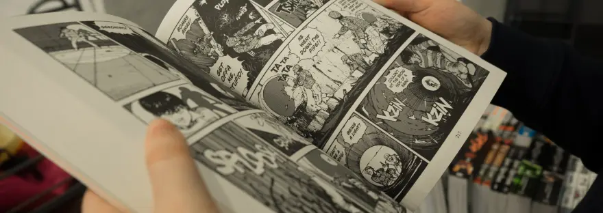
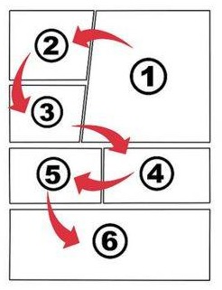
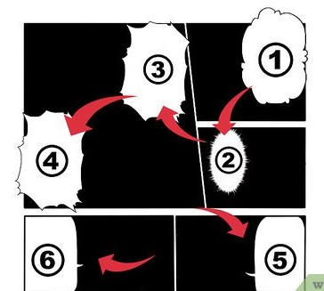

El Manga es tan amplio en variedad de contenido, como cualquier otro género literario y ha cautivado a un público tan diverso como extenso. Los fanáticos del manga japonés se encuentran por todo el mundo y son niños, jóvenes y adultos indistintamente. Cuando se trata de consumir manga, no existen géneros ni clases sociales.
Pero lo que sí existe, es una serie de factores importantes que debes tener presente antes de sumergirte en el increíble mundo del manga japonés para disfrutarlo a mil y entenderlo realmente, y en esta nota te lo contamos todo.
En Japon se lee de derecha a izquierda , al contrario de la forma en la que leemos nosotros y, por lo tanto, cuando lees un Manga debes hacerlo en ese orden también, empezando siempre por la esquina superior derecha y siguiendo los diálogos desde arriba hacia abajo.
Hasta hace algún tiempo las editoriales occidentales, volteaban los diálogos de los mangas para que el consumo de las historietas no tuviera ningún obstáculo. Lo cierto es que el trabajo para no alterar la historia o dañar el arte del “mangaka” (artista productor de manga), era muy duro y en algunos casos el artista no estaba de acuerdo. Hoy en día las traducciones se hacen respetando el diseño original.
En algunos momentos durante la lectura de un manga, podemos encontrarnos con un cambio importante, en el que la página puede estar impresa sobre negro y no sobre blanco. Esta es una de las maneras en las que el mangaka nos indica que las acciones narradas y los sucesos a continuación, transcurren de noche.
Luego de que leas esto esperamos que esta pequeña pero detallada guia te ayude a quitarte las dudas para poder iniciar en este maravilloso mundo del manga!